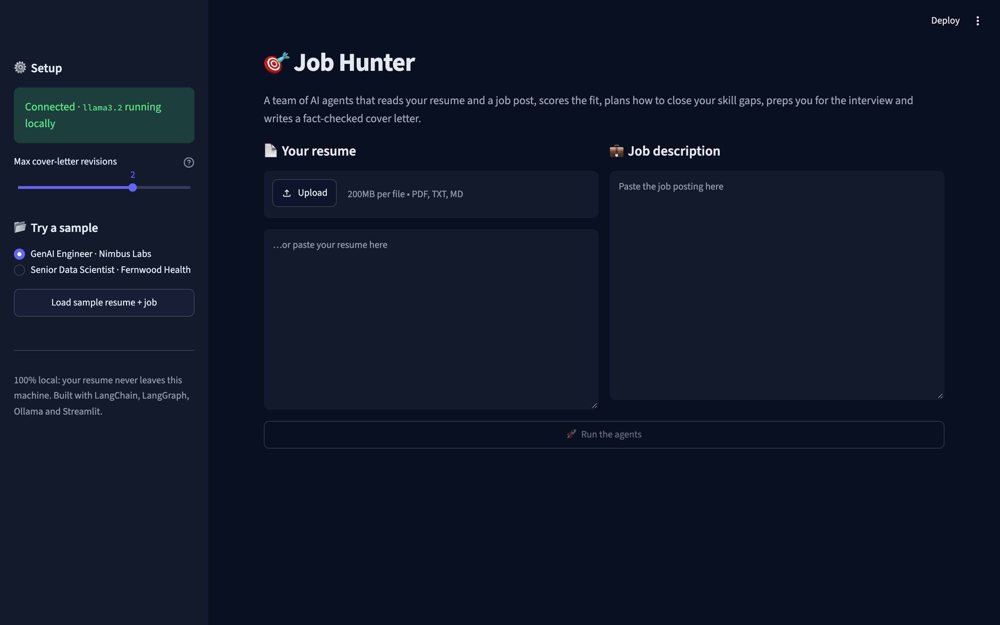
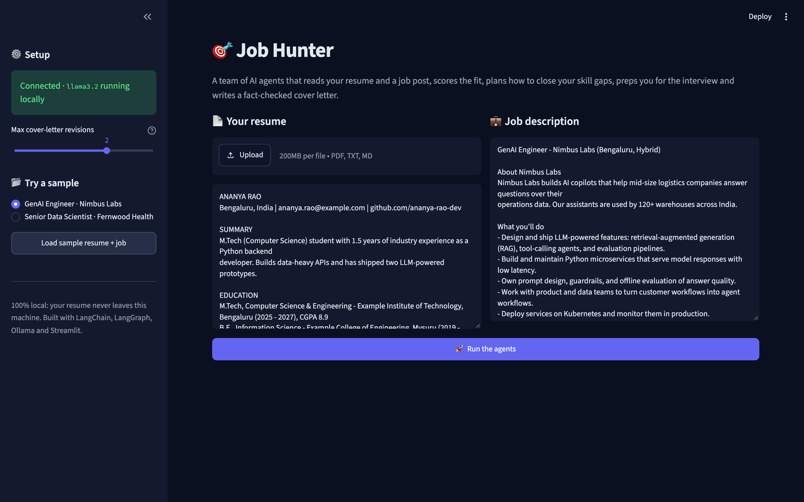
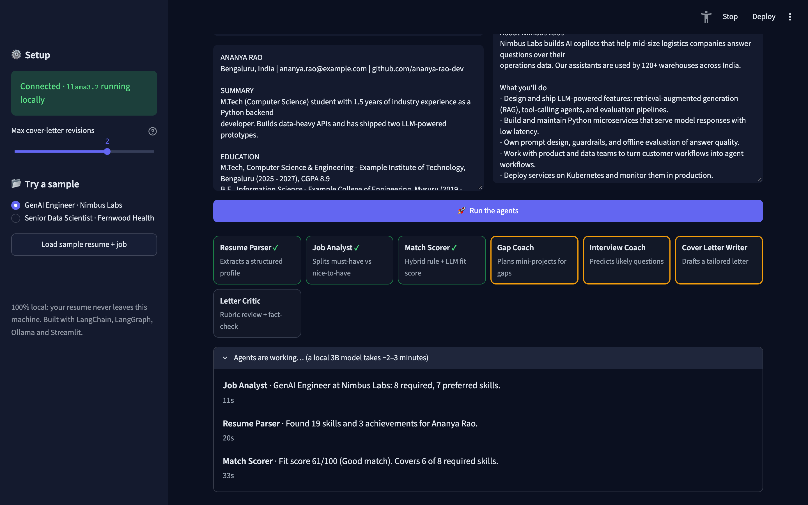
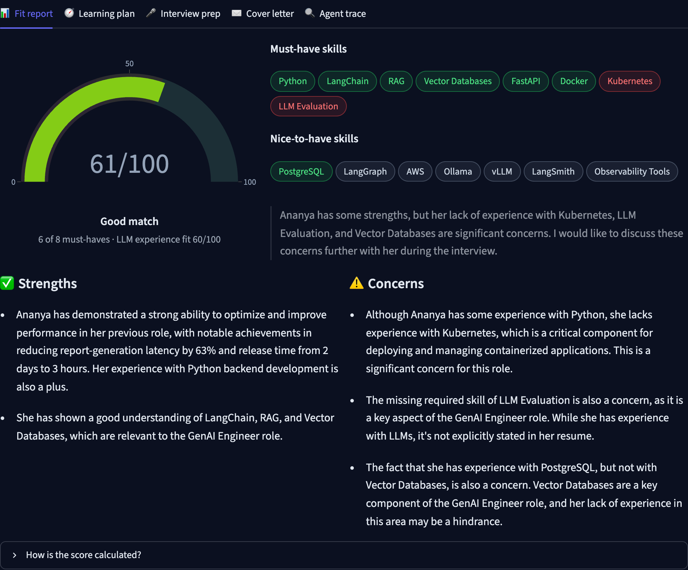
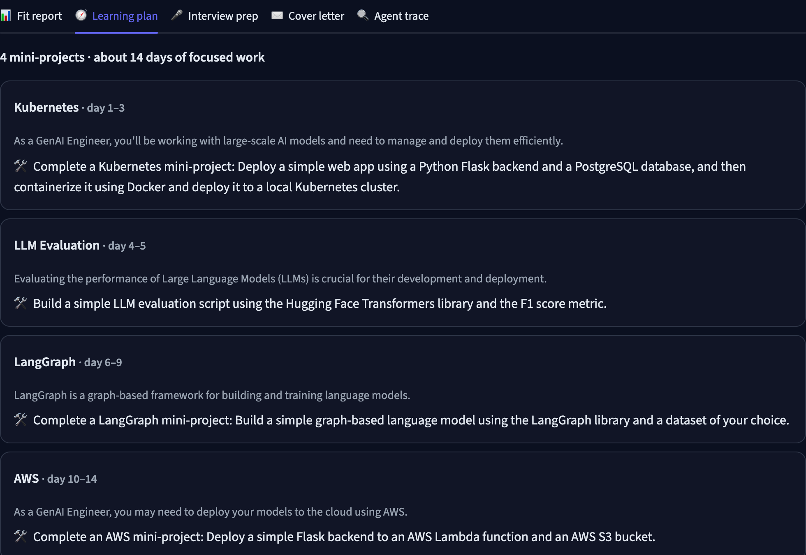
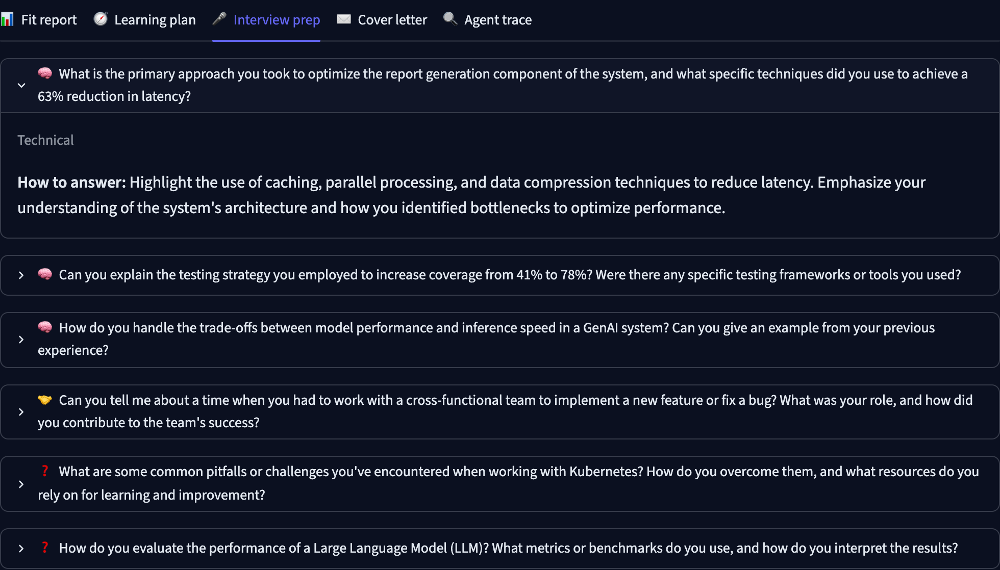
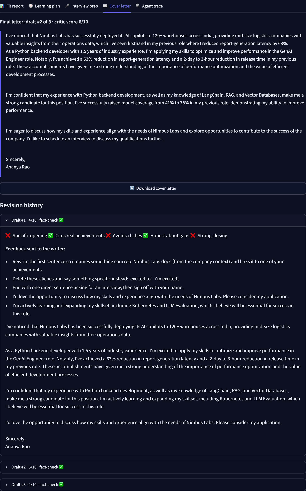
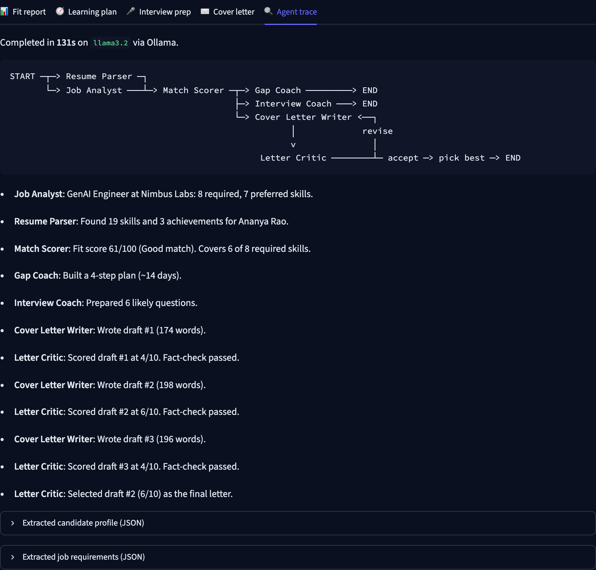
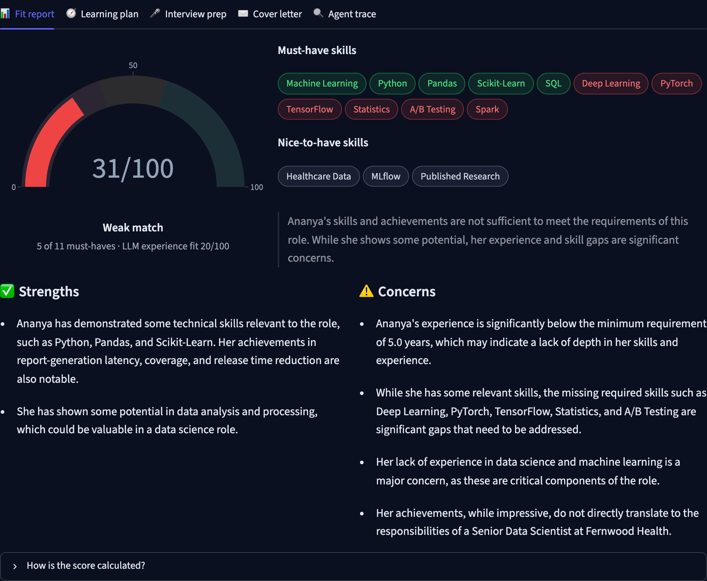

I am pleased to have successfully completed the project Job Hunter: A Multi-Agent Career Copilot Using LangChain, LangGraph and Ollama. Working on this project gave me hands-on experience in designing agentic generative AI systems, and I learned a great deal about making language-model applications reliable.
I would like to take this opportunity to express my gratitude to Dr. B G Prasad, Principal of DSCE, for permitting us to utilize all the necessary facilities of the institution.
I also thank our respected Vice Principal and HOD of Computer Science & Engineering, DSCE, Bangalore, Dr. Ramesh Babu D R, for his support and encouragement throughout the process.
I am immensely grateful to my respected and learned guide, Dr. Anusha Preetham, Associate Professor, Dept. of CSE, DSCE, for her valuable help and guidance.
I also thank all the faculty and support staff of the Department of Computer Science, DSCE. Without their support over the years, this work would not have been possible.
Rahul Joy Suneel
1DS25SCS10
Job seekers routinely tailor their applications to every posting: they compare their resume against the requirements, work out which skills they are missing, prepare for likely interview questions and write a cover letter. Existing tools either match keywords mechanically, as Applicant Tracking Systems do, or rely on a single chatbot prompt whose output is generic and prone to hallucination. This project presents Job Hunter, a multi-agent career copilot built with LangChain and LangGraph that runs entirely on a local Large Language Model (Llama 3.2, 3B parameters) served by Ollama.
Seven specialised agents cooperate through a LangGraph state graph. These are a Resume Parser, Job Analyst, Match Scorer, Gap Coach, Interview Coach, Cover Letter Writer and Letter Critic. Independent agents run in parallel, and the writer and critic form a feedback loop that revises the cover letter until it passes a rubric or reaches a revision limit. Every agent produces typed output validated against Pydantic schemas. To make a small local model dependable, the system combines LLM reasoning with deterministic components: a skill matcher that understands aliases, skill families, alternatives and compound requirements; a hybrid fit score in which the LLM contributes only 30%; a rubric-based critic whose score is computed in code; and a hallucination guardrail that rejects any figure, placeholder or skill claim in the letter that cannot be traced to the resume.
The application provides a Streamlit interface with a live view of the agent pipeline. On the sample data, the hybrid matcher classified 12 of 12 hand-labelled requirements correctly, against 7 of 12 for naive keyword matching. The guardrail caught invented metrics and placeholder employers that the language model produced. All 20 automated tests and every system test case passed. A complete analysis takes about two to three minutes on an 8 GB Apple M1 laptop, with no data leaving the machine.
Applying for a job well takes considerable effort. For each posting, a candidate must read the description, identify the must-have and nice-to-have skills, compare them honestly with their own experience, decide whether the role is worth applying for, prepare for the interview and write a cover letter that is specific to the company. Doing this for dozens of applications is tiring, so candidates often send generic applications, which recruiters tend to ignore.
Generative AI can help, but a single prompt to a chatbot (“here is my resume and a job description, write a cover letter”) has well-known weaknesses. The output is generic. The model may claim skills the candidate does not have, or invent impressive-sounding numbers. And there is no structured analysis of why the candidate fits or does not fit. Cloud chatbots also require the user to upload a resume, a document full of personal information, to a third-party service.
This project addresses these problems by decomposing the task into a team of specialised AI agents, orchestrated with LangGraph, running on a local language model through Ollama, and backed by deterministic checks wherever correctness matters.
The main objective is to build a reliable, privacy-preserving multi-agent application that analyses a candidate’s fit for a job and produces actionable, honest application material. The specific objectives are:
This report is organised into seven chapters. Chapter 1 introduces the problem, objectives and applications. Chapter 2 presents the problem statement, existing systems, the proposed solution, its advantages and the system requirements. Chapter 3 reviews the technologies used: generative AI, large language models, LangChain, LangGraph, multi-agent systems, Ollama, Llama 3.2, structured output, Streamlit and Python. Chapter 4 describes the architecture, the agent workflow, each module, the data flow, the scoring algorithm and the guardrails. Chapter 5 covers the implementation, key source code and the execution procedure. Chapter 6 presents testing, test cases, results with screenshots, and limitations. Chapter 7 concludes the report and outlines future enhancements.
Given a candidate’s resume and a job description, the system must (i) extract structured information from both documents, (ii) determine which required and preferred skills the candidate has, (iii) produce an explainable fit score, (iv) recommend concrete steps to close skill gaps, (v) predict likely interview questions, and (vi) write a tailored cover letter that contains only facts supported by the resume. The system must run on a typical student laptop without paid APIs, keep personal data local, and remain reliable even though small local language models are prone to formatting errors, inconsistency and hallucination.
Many job portals and Applicant Tracking Systems (ATS) score resumes by matching keywords from the job description.
Limitations:
General-purpose chatbots can write cover letters and give career advice from a single prompt.
Limitations:
Template-based tools help format resumes and letters but do not analyse a specific job posting.
Limitations:
The proposed system, Job Hunter, is a multi-agent application in which each agent has one clearly defined
responsibility. Agents communicate through a shared, typed state managed by a LangGraph StateGraph:
CandidateProfile (skills, experience, quantified achievements).JobRequirements, separating must-have from nice-to-have skills.The Resume Parser and Job Analyst run in parallel, as do the Gap Coach, Interview Coach and Cover Letter Writer. The writer and critic form a loop that ends when the letter passes or the revision limit is reached, after which the best-scoring draft is selected. A Streamlit web interface shows each agent’s status live and presents the results in tabs.
Generated content can still be imperfect. Users should review the cover letter and advice before using them.
| Software | Purpose |
|---|---|
| Python 3.11 | Main programming language |
| LangChain 1.4 (langchain-core 1.6) | Prompt templates, LCEL chains, structured output, fallbacks |
| LangGraph 1.2 | Multi-agent state graph with parallel branches and conditional loops |
| langchain-ollama 1.1 | Connects LangChain to Ollama (ChatOllama) |
| Ollama 0.40 + Llama 3.2 (3B) | Runs the language model locally |
| Pydantic 2 | Schemas for validated structured output |
| Streamlit 1.65, Plotly | Web interface and fit-score gauge |
| pypdf | Extracting text from PDF resumes |
| pytest, Playwright | Automated tests and report screenshots |
| VS Code / any editor, Git, web browser | Development, version control and accessing the app |
Conversational AI has evolved from rule-based programs to large language models that can follow instructions, reason over text and call tools. A newer trend is agentic AI. Here, instead of one model answering in one step, several LLM-powered components each take a role, share state and iterate. This chapter reviews the technologies this project builds on and explains how each is used.
Generative AI refers to models that produce new content (text, images, audio or code) based on patterns learned during training. Text generators take a prompt and produce a continuation. In this project, generative AI is used in two ways: to extract structured information from unstructured documents (resumes and job posts) and to generate new text (learning plans, interview questions and cover letters). Generative models can produce fluent but false statements, which is why this project pairs generation with verification.
Large Language Models (LLMs) are transformer-based neural networks trained on very large text corpora to predict the next token. Through instruction tuning they learn to follow natural-language instructions. Their behaviour is shaped by the prompt and by decoding settings such as temperature: low temperature gives more deterministic output (used here for extraction and scoring), while higher temperature gives more varied output (used for writing). Smaller models (1–8 billion parameters) can run on laptops but are less reliable at following complex formats. This motivates the structured output, validation and fallback techniques used in this project.
LangChain is a framework for building applications powered by language models. This project uses several of its core abstractions:
prompt | llm | StrOutputParser().llm.with_structured_output(PydanticModel) sends a JSON schema to the model and parses the reply into a validated Python object.chain.with_fallbacks([...]) automatically retries with an alternative chain if the primary one fails.from langchain_ollama import ChatOllama
from langchain_core.prompts import ChatPromptTemplate
llm = ChatOllama(model="llama3.2", temperature=0)
prompt = ChatPromptTemplate.from_messages([
("system", "Extract a structured profile from the resume."),
("human", "RESUME:\n{resume_text}"),
])
chain = prompt | llm.with_structured_output(CandidateProfile)
profile = chain.invoke({"resume_text": text}) # -> CandidateProfile object
LangGraph is a library from the LangChain ecosystem for building stateful, multi-step agent workflows as graphs. A
StateGraph is defined by a typed state, a set of nodes (functions that read the state and return updates)
and edges that decide which node runs next. Key features used in this project are:
operator.add accumulate values from parallel branches instead of overwriting them.graph.stream() emits events as each node starts and finishes, which powers the live UI.Multi-agent systems split a complex task among specialised agents. Compared with a single prompt, this gives each agent a focused prompt and schema, allows independent steps to run in parallel, and enables patterns such as generator–critic (reflection), where one agent reviews and improves another’s output.
Ollama is a runtime for running open-weight language models locally. It downloads quantised models, serves them through a local HTTP API (port 11434) and supports JSON-schema-constrained output, which LangChain’s structured output uses. In this project Ollama runs Llama 3.2 on the user’s laptop, so no API key or internet connection is needed after the model is downloaded, and resume data stays on the machine.
Llama 3.2 is a family of open-weight models released by Meta. The 3-billion-parameter instruction-tuned variant
(llama3.2 in Ollama, about 2 GB quantised) is used here because it runs comfortably on an 8 GB laptop at about
20–25 tokens per second. The model name is configurable, so larger models such as Llama 3.1 8B or Qwen 2.5 can be swapped in
without code changes.
Pydantic is a Python data-validation library. Each agent’s output is described by a Pydantic model whose field
descriptions double as instructions to the LLM. LangChain converts the model into a JSON schema, Ollama constrains generation
to that schema, and Pydantic validates the result. Downstream agents therefore receive typed objects
(e.g. profile.skills: list[str]) rather than free text that must be parsed.
Streamlit is a Python framework for building interactive web applications without separate HTML or JavaScript code. The
project uses st.file_uploader for PDF resumes, st.text_area for inputs, st.status for
the live agent log, st.tabs for results, st.plotly_chart for the score gauge,
st.download_button for the cover letter and st.session_state to keep results across reruns.
Python is the implementation language for the whole project: agents, graph, scoring, guardrails, user interface and tests. Its ecosystem (LangChain, LangGraph, Pydantic, Streamlit, pytest) makes it the de facto language for LLM application development.
The system follows a layered architecture (Figure 4.1). The presentation layer is the Streamlit web app (or the command-line runner). The orchestration layer is the LangGraph state graph that schedules the seven agents. The agent layer contains LangChain chains: prompt templates, the chat model and output parsers. The reliability layer contains deterministic Python components: the skill matcher, hybrid scorer and guardrails. The model layer is Ollama serving Llama 3.2 locally.
Figure 4.2 shows the agent graph. Execution starts with two agents in parallel. The match node waits for
both, then fans out to three agents. The writer and critic loop until the letter passes or the revision limit is reached,
and then the best draft is selected.
The workflow steps are:
profile and job to the state.app.py)Accepts a PDF/TXT resume or pasted text and the job description, checks the Ollama connection, lets the user set the maximum number of letter revisions, loads sample data, streams agent progress live and presents results in five tabs: Fit report, Learning plan, Interview prep, Cover letter (with revision history) and Agent trace.
documents.py)Extracts text from uploaded PDFs with pypdf (or decodes text files) and normalises bullets and whitespace.
agents.py, prompts.py, schemas.py)Defines the seven agents. Each is a LangChain chain (prompt | model.with_structured_output(Schema)) wrapped in a
node function that reads from and writes to the graph state and appends a human-readable trace message.
graph.py)Builds and compiles the LangGraph StateGraph: nodes, parallel edges, the join, the conditional revise/accept
edge and the append-only reducers for drafts, critiques and the trace.
scoring.py)Normalises skills, expands compound requirements, matches skills using aliases, families, alternatives and resume-text search, and computes the hybrid fit score and its band.
guardrails.py)Detects unsupported numbers, placeholder organisations and brackets, clichés and false claims about missing skills, and cleans prompt artifacts from generated letters.
Ollama serves Llama 3.2 locally. Each ChatOllama client sets a temperature, an output cap
(num_predict = 1200) and a request timeout. A fallback chain retries at a different temperature if
structured parsing fails.
All agents share one typed state dictionary (JobHunterState). Table 4.1 lists the main fields and which agent
writes them.
| State field | Type | Written by |
|---|---|---|
resume_text, job_text | str | User input |
profile | CandidateProfile | Resume Parser |
job | JobRequirements | Job Analyst |
skills, judgement, score | SkillMatch, FitJudgement, int | Match Scorer |
plan | LearningPlan | Gap Coach |
interview | InterviewKit | Interview Coach |
letter, revisions, drafts[] | str, int, list | Cover Letter Writer |
critique, critiques[] | LetterReview | Letter Critic |
best_draft | int | Select best |
trace[] | list of messages | Every agent (append-only) |
Table 4.1: Shared graph state
Data flow: Resume + Job text → [Resume Parser ∥ Job Analyst] → Match Scorer → [Gap Coach ∥ Interview Coach ∥ (Writer ⇄ Critic)] → Select best → Streamlit display.
A score produced entirely by an LLM is unstable and can be inflated by hallucination. Job Hunter therefore computes skill coverage in code and lets the LLM contribute only a bounded qualitative component:
Fit = 0.55 × Crequired + 0.15 × Cpreferred + 0.30 × ELLM
where Crequired and Cpreferred are the percentages of must-have and nice-to-have skills matched, and ELLM ∈ [0, 100] is the model’s experience-fit judgement (clamped, and rescaled if the model answers on a 0–10 scale). Scores of 80 or more are a Strong match, 60–79 a Good match, 40–59 a Stretch role and below 40 a Weak match. A requirement counts as matched by the following steps:
The Letter Critic combines an LLM rubric with code-based checks (Table 4.2). The model answers five true/false questions and the score is computed as 2 points per passed check. Checks that can be done reliably in code override the model’s answer.
| Check | How it is evaluated | Effect when failed |
|---|---|---|
| Specific opening | LLM rubric | −2; feedback names the company context to use |
| Cites real achievements | LLM rubric | −2; feedback asks for two quantified achievements |
| Avoids clichés | Code: phrase list (thrilled, passionate, innovative…) | −2; exact phrases quoted |
| Honest about gaps | Code: missing skill mentioned without learning language | −2; offending sentence quoted |
| Strong closing | LLM rubric | −2; asks for a direct call to action |
| Fact-check | Code: every number must appear in resume/JD; no “XYZ Corp” or [brackets] | Score capped at 4/10 |
| Length | Code: 150–330 words | Score capped at 6/10 |
Table 4.2: Letter Critic checks
Because a revision can be worse than its predecessor, the system keeps every draft and selects the one with the highest score, breaking ties in favour of fewer fact-check flags and then the later draft.
The project was developed on an Apple M1 MacBook (8 GB RAM, macOS) using Python 3.11 in a virtual environment, with
Ollama 0.40 serving Llama 3.2 3B. The code is organised as a Python package (job_hunter/) with a Streamlit
front end (app.py), a command-line runner (cli.py), sample data (samples/) and a pytest
suite (tests/). The project is version-controlled with Git.
job-hunter-agent/ ├── app.py Streamlit UI with live agent pipeline ├── cli.py terminal runner ├── job_hunter/ │ ├── agents.py the seven agents (LangChain chains → graph nodes) │ ├── graph.py LangGraph StateGraph wiring │ ├── prompts.py ChatPromptTemplates │ ├── schemas.py Pydantic structured-output contracts │ ├── scoring.py skill matcher + hybrid score │ ├── guardrails.py hallucination / cliché / honesty checks │ ├── documents.py PDF and text extraction │ └── config.py model name, temperatures, limits, weights ├── samples/ fictional resume and two job descriptions ├── tests/ 20 automated tests (no Ollama needed) └── report/ screenshot capture and verification scripts
Stage 1: Environment setup. Installed Ollama, pulled llama3.2, created a Python 3.11 virtual environment
and installed LangChain, LangGraph, langchain-ollama, Streamlit, Plotly, pypdf and pytest.
Stage 2: Schema design. Defined Pydantic models for every agent output (CandidateProfile,
JobRequirements, FitJudgement, LearningPlan, InterviewKit,
LetterCritique), using field descriptions as instructions to the model.
Stage 3: Agents. Wrote prompt templates and built each agent as an LCEL chain with structured output.
Stage 4: Orchestration. Wired the agents into a LangGraph StateGraph with parallel branches, a join and
a conditional revision loop.
Stage 5: Evaluation and hardening. Ran the pipeline on sample data and fixed each observed failure with a targeted mechanism. Table 5.1 summarises what was observed and how it was addressed. This iterative process was the most important part of the project.
| Observed failure (Llama 3.2 3B) | Fix implemented |
|---|---|
| Letter invented “XYZ Corporation” and a “25% increase in engagement” | Numeric/placeholder fact-check guardrail; employer list and exact achievements passed to the writer |
| “RAG and vector databases” reported as missing although the resume has RAG and FAISS | Requirement expansion, skill families, acronym aliases, resume-text fallback |
| “1+ years of experience” treated as a skill; judge said the candidate “lacks experience” | Experience items removed from skills; years compared in code and passed to the judge |
| Learning plan estimated about 510 days | Prompt bounds and clamping each item to 1–21 days |
| Critic gave 6/10 to every draft | Rubric of five true/false checks, score computed in code |
| One generation looped for more than 13,000 tokens and hung the run | Output cap (num_predict), request timeout, fallback retry at another temperature |
| Job title extracted as “Job Description Analysis” | Fallback to the posting’s header line |
| Experience fit answered on a 0–10 scale | Automatic rescaling to 0–100 |
| Revision made the letter worse | Keep all drafts and select the best |
Table 5.1: Failures found during development and the corresponding fixes
Stage 6: User interface. Built the Streamlit app with live streaming of graph events (stream_mode=["tasks",
"updates"]) to show which agents are running.
Stage 7: Testing. Wrote unit tests for scoring and guardrails, graph tests with a scripted fake model, and system
checks using Streamlit’s AppTest.
class JobRequirements(BaseModel):
title: str = Field(description="The exact job title as written in the posting")
company: str = Field(description="Hiring company name, or 'the company' if not stated")
seniority: str = Field(description="One of: intern, junior, mid, senior, lead")
required_skills: list[str] = Field(description="Must-have technical skills as short names ...")
preferred_skills: list[str] = Field(default_factory=list, description="Nice-to-have skills")
responsibilities: list[str] = Field(default_factory=list)
min_years_experience: float = Field(default=0)
def default_llm_factory(temperature):
return ChatOllama(model=config.MODEL_NAME, temperature=temperature,
num_predict=config.MAX_OUTPUT_TOKENS, # stop runaway generations
client_kwargs={"timeout": config.REQUEST_TIMEOUT_S})
def structured(prompt, llm, schema):
primary = prompt | llm.with_structured_output(schema)
# retry once at a different temperature if parsing/validation fails
return primary.with_fallbacks([prompt | retry.with_structured_output(schema)])
self.resume_chain = structured(prompts.RESUME_PARSER, extract, CandidateProfile)
self.job_chain = structured(prompts.JOB_ANALYST, extract, JobRequirements)
self.letter_chain = prompts.LETTER_WRITER | write | StrOutputParser()
class JobHunterState(TypedDict, total=False):
resume_text: str
job_text: str
profile: Any
...
drafts: Annotated[list, operator.add] # append-only: parallel-safe
critiques: Annotated[list, operator.add]
trace: Annotated[list, operator.add]
g = StateGraph(JobHunterState)
g.add_edge(START, "parse_resume")
g.add_edge(START, "analyze_job") # parallel
g.add_edge(["parse_resume", "analyze_job"], "match") # join
for node in ("gap_coach", "interview_coach", "write_letter"):
g.add_edge("match", node) # parallel fan-out
g.add_edge("write_letter", "critique_letter")
g.add_conditional_edges("critique_letter", should_revise,
{"revise": "write_letter", "accept": "select_best"})
def should_revise(state):
if state["critique"].score >= 8 or state["revisions"] > config.MAX_LETTER_REVISIONS:
return "accept"
return "revise"
def skill_in(skill, candidate_skills, resume_text=""):
terms = _terms(skill) # alternatives + aliases + family members
have = [normalize(c) for c in candidate_skills]
if any(_similar(t, c) for t in terms for c in have):
return True
text = resume_text.lower() # fallback: search the raw resume
return any(re.search(rf"(?<![a-z0-9]){re.escape(t)}(?![a-z0-9])", text) for t in terms)
def fit_score(match, experience_fit):
experience_fit = max(0, min(100, experience_fit))
return round(0.55 * match.required_coverage * 100
+ 0.15 * match.preferred_coverage * 100
+ 0.30 * experience_fit)
def unsupported_claims(letter, *sources):
known = set().union(*(_numbers(s) for s in sources))
issues = []
for m in NUMBER.finditer(letter):
if m.group(1).replace(",", "") not in known:
issues.append(f"The figure '{m.group(0)}' does not appear in the resume ...")
for m in PLACEHOLDER_ORG.finditer(letter): # XYZ, ABC, Acme ...
issues.append(f"'{m.group(0)}' is an invented placeholder organisation ...")
return issues
for mode, chunk in graph.stream(state, stream_mode=["tasks", "updates"]):
if mode == "tasks" and "input" in chunk:
status[chunk["name"]] = "running" # agent started
elif mode == "updates":
for node, delta in chunk.items():
status[node] = "done" # agent finished
merge(state, delta)
render_pipeline(pipeline_slot, status)
Step 1: Install Ollama from ollama.com (or brew install ollama on macOS) and start it.
Step 2: Download the model:
ollama pull llama3.2
Step 3: Create a virtual environment and install dependencies in the project folder:
python -m venv .venv source .venv/bin/activate # Windows: .venv\Scripts\activate pip install -r requirements.txt
Step 4: Run the tests (optional; they do not need Ollama):
pytest -q
Step 5: Start the web application:
streamlit run app.py
Step 6: Open the URL shown in the terminal (http://localhost:8501). The sidebar confirms the Ollama connection.
Step 7: Upload a resume PDF (or paste text) and paste a job description, or click Load sample resume + job.
Step 8: Click Run the agents, watch the pipeline and explore the result tabs. The cover letter can be downloaded.
Alternative (CLI):
python cli.py samples/resume_ananya.txt samples/job_genai_engineer.txt
Testing was carried out at three levels:
AppTest and a PDF-upload check.All automated checks are reproducible with pytest -q and python report/verify.py.
| Test Case | Input or Condition | Expected Result | Status |
|---|---|---|---|
| TC01 | Sample resume + “GenAI Engineer” posting (real model) | All seven agents complete; fit report, plan, questions and letter displayed | Passed |
| TC02 | Sample resume + “Senior Data Scientist” posting (5+ years, deep learning, Spark) | Lower score than TC01, with missing skills listed | Passed |
| TC03 | Empty resume or job description | “Run the agents” button disabled | Passed |
| TC04 | Very short input (“Python developer”) | Warning: input too short; agents not run | Passed |
| TC05 | Resume uploaded as a PDF | Text extracted correctly (name, skills, figures) | Passed |
| TC06 | Ollama not running | Sidebar error with instructions; run disabled | Passed |
| TC07 | Letter containing an invented figure (“25%”) and “XYZ Corporation” | Guardrail flags both; score capped at 4/10; draft sent back | Passed |
| TC08 | Letter with clichés and a false Kubernetes claim, approved by the critic | Code checks override the critic; feedback quotes the problems | Passed |
| TC09 | Critic rejects every draft | Loop stops after 2 revisions (3 drafts); best draft kept | Passed |
| TC10 | Compound, alternative and synonym requirements (12 hand-labelled) | Correct matched/missing classification | Passed (12/12) |
| TC11 | Model returns a generic title or a 0–10 score | Title recovered from posting; score rescaled to 0–100 | Passed |
| TC12 | Runaway generation (observed: 13,000+ tokens) | Output capped; fallback retry; run completes | Passed |
| TC13 | Automated test suite (pytest -q) | All tests pass | Passed (20/20) |
Table 6.1: Test cases and results









Skill matching. Twelve must-have requirements were copied verbatim from the two sample postings and labelled by hand as present or absent in the sample resume. A naive exact keyword matcher, as used by simple ATS filters, was compared with the hybrid matcher (Table 6.2).
The naive matcher failed on every requirement phrased as an alternative (“LangChain or LangGraph”), a compound (“RAG and vector databases”) or with a qualifier (“Strong Python”). The hybrid matcher classified all twelve correctly, including the absent skills. This sample is small and was built from the project’s own data, so the result shows the benefit of each matching rule rather than general accuracy.
Effect of the guardrails. During development the unguarded writer produced cover letters with invented figures (“25% increase in user engagement”, “reduced response times by 30%”) and a placeholder employer (“XYZ Corporation”). With the guardrail enabled, every such draft was flagged, capped at 4/10 and returned to the writer with the problem quoted. The final selected letter contained only figures that appear in the resume.
Discussion. The results show that a small local model can drive a useful multi-agent application when its output is constrained by schemas and checked by code. The deterministic layer makes the most important outputs (which skills match, the score, and whether the letter is truthful) reproducible and explainable. The LLM contributes what it does well: reading unstructured text, judging experience and writing. Parallel execution keeps the total time to about two to three minutes on a laptop. Ollama processes requests largely sequentially on 8 GB of RAM, so the gain from parallelism is modest on this hardware but grows on machines that can serve concurrent requests.
The project “Job Hunter: A Multi-Agent Career Copilot Using LangChain, LangGraph and Ollama” shows how agentic generative AI can be applied to a practical, everyday problem. Seven specialised agents, built as LangChain chains with Pydantic structured output and orchestrated by a LangGraph state graph, analyse a resume against a job posting, compute an explainable fit score, plan how to close skill gaps, prepare the candidate for interviews and write a cover letter that is reviewed and revised automatically.
A central lesson of the project is that reliability comes from system design, not from the model alone. Every significant failure observed with a small local model was addressed with a specific mechanism: deterministic matching and scoring, a rubric-based critic, a hallucination guardrail, output caps with fallbacks, and best-draft selection. The system runs fully offline on a student laptop, keeps personal data private, passed all 20 automated tests and all 13 test cases, and outperformed naive keyword matching on the evaluation sample.
Through this project I gained practical experience with LangChain, LangGraph, local LLM deployment with Ollama, prompt and schema design, LLM-as-judge evaluation, guardrails, and testing non-deterministic AI systems.
[1] LangChain, “LangChain Documentation.” [Online]. Available: https://docs.langchain.com/
[2] LangChain, “LangGraph Documentation.” [Online]. Available: https://langchain-ai.github.io/langgraph/
[3] LangChain, “ChatOllama Integration Documentation.” [Online]. Available: https://python.langchain.com/docs/integrations/chat/ollama/
[4] Ollama, “Ollama Documentation.” [Online]. Available: https://docs.ollama.com/
[5] Meta, “Llama Models.” [Online]. Available: https://www.llama.com/
[6] A. Grattafiori et al., “The Llama 3 Herd of Models,” arXiv preprint arXiv:2407.21783, 2024.
[7] S. Yao et al., “ReAct: Synergizing Reasoning and Acting in Language Models,” in Proc. ICLR, 2023.
[8] N. Shinn et al., “Reflexion: Language Agents with Verbal Reinforcement Learning,” in Proc. NeurIPS, 2023.
[9] A. Madaan et al., “Self-Refine: Iterative Refinement with Self-Feedback,” in Proc. NeurIPS, 2023.
[10] Q. Wu et al., “AutoGen: Enabling Next-Gen LLM Applications via Multi-Agent Conversation,” arXiv preprint arXiv:2308.08155, 2023.
[11] L. Zheng et al., “Judging LLM-as-a-Judge with MT-Bench and Chatbot Arena,” in Proc. NeurIPS Datasets and Benchmarks, 2023.
[12] Z. Ji et al., “Survey of Hallucination in Natural Language Generation,” ACM Computing Surveys, vol. 55, no. 12, 2023.
[13] Pydantic, “Pydantic Documentation.” [Online]. Available: https://docs.pydantic.dev/
[14] Streamlit, “Streamlit Documentation.” [Online]. Available: https://docs.streamlit.io/
[15] Python Software Foundation, “Python 3 Documentation.” [Online]. Available: https://docs.python.org/3/